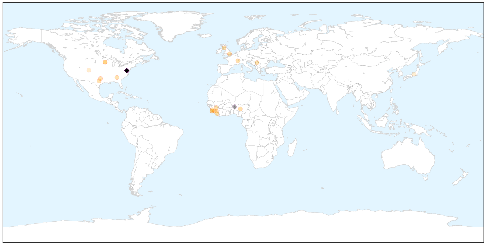
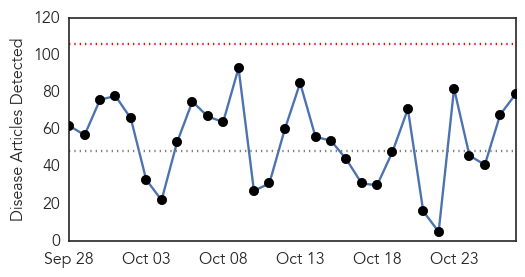
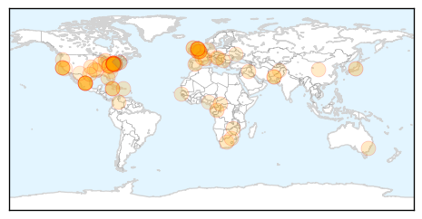
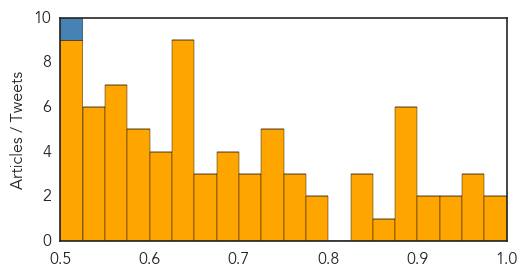

Ebola
30-Day Web Trend
4 alerts, 0 warnings

30-Day Twitter Trend
11 alerts, 1 warnings

Article Locations

X

Article Confidences

Top Articles:
- 1.000
- Mystery deaths in Sierra Leone spread fear of Ebola relapses
- 1.000
- Scientists Calculate Risk of Ebola Spreading to France, Britain
- 0.998
- Would you volunteer to take part in THIS medical trial? You'll be paid £750 but there's one catch
- 0.998
- Nigeria is set to establish an Ebola survival clinic
- 0.993
- Ebola Survivors Still Have Myriad Problems
- 0.977
- Ebola deployment by military crucial but carries risks: report
- 0.976
- Sick British Ebola nurse 'much better'
- 0.969
- This Ebola-Type Fever is Named After a Town in Germany
- 0.944
- Without immunization, Texas could see a return of the plagues
- 0.937
- Liberian VP visits Minnesota, asks for more help in Ebola recovery
- 0.933
- IOM Guinea Participates in Public Health Surveillance of Village Hit by Recent Ebola Death - Guinea
- 0.919
- St. Lucia News From The Voice St. Lucia
- 0.854
- Veep Boakai Meets with Diaspora in Minnesota
- 0.853
- S&Ds call on the EU for concrete measures to help reconstruct Ebola-affected countries
- 0.846
- Ebola Orphans Get Help Reacclimating, Raising Siblings
- 0.842
- Veep Boakai Holds Discussions with Diaspora in Minnesota
- 0.574
- Extinguishing Ebola: Greeley Central graduate plays a small role in helping to snuff the outbreak of
- 0.565
- Ebola orphans face life of hardship as education and jobs remain out of reach
- 0.501
- Ghana’s Frontline Border Officials Improve Ebola Preparedness - Ghana
Top Tweets:
- 0.978
- A Notable Honor for Ebola Response Team as It Planned and Prepared for the Ebola Virus - https://t.co/sXylElAvPR ebola
- 0.973
- EBOLA IN SCOTLAND Ebola Case Confirmed in Glasgow Hospital - https://t.co/4vkeCgLNTG ebola
- 0.970
- IOM Guinea conducts public health surveillance training following Ebola death - https://t.co/jFqUuFIqdS ebola
- 0.967
- Mystery deaths in Sierra Leone spread fear of Ebola relapses - https://t.co/pAOOAOvdin ebola
- 0.966
- The Sierra Leone village where every orphan is a victim of the ebola epidemic - https://t.co/mQMuQtsrig ebola
- 0.952
- Pestilence : CDC warns Deadly Ebola Outbreak is Spiraling out of Control in Africa - https://t.co/qFnHpabIjt ebola
- 0.942
- MERS Ebola bird flu: Science's big missed opportunities - https://t.co/Nuj9JoC8rm ebola
- 0.942
- MERS Ebola bird flu: Science's big missed opportunities - https://t.co/9cyN605JSr ebola
- 0.942
- MERS Ebola bird flu: Science's big missed opportunities - https://t.co/9L6hUXXJDW ebola
- 0.930
- United States nurse quarantined over ebola fears sues - https://t.co/zRJA8vOX0L ebola
- 0.930
- United States nurse quarantined over ebola fears sues - https://t.co/Ekmwl6s1vv ebola
- 0.923
- Sierra Leone News: Stigmatization of Ebola survivors is - https://t.co/buIVkeuSN5 ebola
- 0.922
- Not carrying out studies during MERS Ebola bird flu are science's big missed opportunities - https://t.co/FVoFqxwS7G ebola
- 0.918
- Atlanta in the Thick of the Fight to Stop the Ebola Virus - https://t.co/lbJm0F3si5 ebola
- 0.913
- The Londoners running for charity in Sierra Leone to help children with Ebola - https://t.co/NKui3uYkx0 ebola
- 0.907
- CRMC Ready to Handle Ebola Outbreak - https://t.co/D71AcOOa4O ebola
- 0.883
- Hanford High alum to talk on Ebola outbreak work - https://t.co/gCywm46wDx ebola
- 0.879
- Global Health Lecture: Learning from Ebola - https://t.co/7ZqVGJoNJd ebola
- 0.879
- Ebola La - https://t.co/1OlAT5yNZ3 ebola
- 0.873
- West African Man Suing North Jersey Pharmacy Hospital for 'Invasive' Ebola Testing - https://t.co/g2GEjDfoYf ebola
- 0.872
- Fighting Ebola in Sierra Leone: a view from the frontline - https://t.co/X4hKLazDRj ebola
- 0.868
- ebola - https://t.co/rhXHn9uL3F ebola
- 0.868
- eBoLa - https://t.co/hf7qgmfM57 ebola
- 0.868
- Ils sont malades d'Ebola - https://t.co/ReY3HdTygJ ebola
- 0.856
- Sierra Leone opens schools for pregnant girls after spike amid Ebola - https://t.co/WGfJxUCSi4 ebola
- 0.854
- Dr. David Samadi on Ebola Vaccine - https://t.co/W0NOrnAF8u ebola
- 0.839
- Ebola Response Team is Honored With Patient Safety Award - Infection Control Today https://t.co/uhSJAhZHj8 ebola EVD
- 0.838
- This Ebola-Type Fever is Named After a Town in Germany - Gizmodo https://t.co/YirxM7L7rx ebola EVD
- 0.837
- The last days of this Ebola outbreak are as much about access to information ... - Quartz https://t.co/grsLVEUl6y ebola EVD
- 0.837
- The last days of this Ebola outbreak are as much about access to information ... - Quartz https://t.co/VNDl53sqNw ebola EVD
- 0.821
- Ebola Overview - https://t.co/7o2GLEkjEG ebola
- 0.821
- Ebola And Beyond: How Prepared Is Boston For The Next Outbreak? - WGBH NEWS https://t.co/ZpUZNLl99O ebola EVD
- 0.813
- Fergie Lalala Parody Ebola Mp3 Download - https://t.co/M2mhbRar85 ebola
- 0.803
- This Ebola-Type Fever is Named After a Town in Germany - https://t.co/2xnsPUVQXv ebola
- 0.771
- More than 300K passengers have now undergone exit screening at international airports in the 3 Ebola affected countries.
- 0.759
- Ebola vaccine trial seeks volunteers - https://t.co/jDEYKzVBse ebola
- 0.751
- Ebola vaccine trial seeks volunteers - AOL Money UK https://t.co/GaDCvCvz8Y ebola EVD
- 0.729
- Ebola Survivors Still Have Myriad Problems - https://t.co/MEw8ZSP34b ebola
- 0.707
- Global Preparedness for Pandemics Symposium: Lessons from Ebola - https://t.co/XCulz3eTgg ebola
- 0.703
- Ebola Orphans Get Help Reacclimating Raising Siblings - Huffington Post https://t.co/AQzddSvkky ebola EVD
- 0.702
- Ebola Orphans Get Help Reacclimating Raising Siblings - https://t.co/Hw3LnyvKY4 ebola
- 0.700
- AfDB Approves US$33.3 Million Ebola Recovery Fund - https://t.co/qFmBOK5vg7 ebola
- 0.699
- Defense: Supect in ATM worker slaying believed victim was spreading Ebola - https://t.co/rvh7YK9fOm ebola
- 0.676
- The environmental origins of Ebola must be tackled - Irish Times https://t.co/BK72NQ74vS ebola EVD
- 0.674
- Ghana's frontline border training facilitates Ebola preparedness - https://t.co/VAHRHL0g36 ebola
- 0.674
- Enhanced methods for unbiased deep sequencing of Lassa and Ebola RNA viruses from clinical ... - https://t.co/cu3QRs7aaS ebola
- 0.658
- The last days of this Ebola outbreak are as much about access to information as access to healthcare - https://t.co/xnsasH9RWy ebola
- 0.656
- Ebola deployment by military crucial but carries risks: report - https://t.co/ELF0loRpmk ebola
- 0.646
- Hocking County Health Department hosts ebola tabletop exercise - https://t.co/7J2Pfcnxg4 ebola
- 0.642
- Watch: Midair refueling and fighting Ebola - all in a day's work - https://t.co/Wq5Vp0SKyU ebola
Showing top 50 tweets...
Unknown
30-Day Web Trend
0 alerts, 0 warnings

30-Day Twitter Trend
2 alerts, 0 warnings

Article Locations

Article Confidences
Top Articles:
- 0.980
- WellSpan York Hospital in Pennsylvania warns 1,300 heart surgery patients of infection risk
- 0.979
- Hundreds sick from shigella outbreak in six different counties of San Francisco: Authorities urge immediate precautions
- 0.966
- Open-heart patients may have been exposed to infection-causing bacteria during surgery, York Hospital warns
- 0.965
- York hospital warns open-heart surgery patients about infection
- 0.963
- WellSpan York Hospital Notifies Open-Heart Surgery Patients of Possible Infection Risk
- 0.941
- 4 Dead After Being Infected by a Device in Surgery at a Pennsylvania Hospital
- 0.928
- Shigella Bacteria Outbreak Sickens Nearly 200 In San Francisco Area
- 0.909
- Flu shots for students stressed in West Virginia - MariettaTimes.com
- 0.906
- Flu season is just getting started in Rhode Island
- 0.892
- NHS chiefs rule out C. diff bug outbreak in Tayside hospitals
- 0.891
- NIH Launches Trial Of Investigational Genital Herpes Vaccine
- 0.891
- Feed bags found to be spreading deadly pig disease
- 0.890
- WV MetroNews – W.Va. health and education officials team up to fight spread of the flu
- 0.887
- Bacterial infection suspected in 4 deaths at Pennsylvania hospital
- 0.877
- Concerns over new disease caused by ticks
- 0.872
- Did Surgery Device Infection Lead to Death of 4 Patients in Pennsylvania Hospital?
- 0.844
- Suspected Shigella cases linked to San Jose restaurant up to 182
- 0.841
- Why Tuberculosis Is More Prevalent in Parts of London Than Iraq or Rwanda
- 0.827
- Free Flu Shots Available At City Health Centers « CBS Philly
- 0.777
- St. Joseph's Hospital waiting on tests of water system for Legionnaires' Disease
- 0.776
- Stereotypes In Health Care Make Patients Feel Worse
- 0.768
- Free Flu Shots At Health Unit In Van Buren
- 0.758
- San Jose Shigella Outbreak Expanded to Six Counties, Sickening 182
- 0.756
- Shigella bacteria outbreak grows to 182 people in six Bay Area counties
- 0.742
- 'No sign of human infection' from anthrax-diseased cow in Wiltshire (From Wiltshire Business Online)
- 0.742
- Health Digest for: Oct. 27, 2015
- 0.742
- 'No sign of human infection' from anthrax-diseased cow in Wiltshire
- 0.730
- Red flag over HIV medicine stock out
- 0.730
- More than 90 percent vote, paving the way for Congo president's third term
- 0.724
- President Hollande honours 43 victims of French bus crash
- 0.710
- Brazil back on top for interest in Miami real estate
- 0.705
- US ‘to increase ground raids on Islamic State group'
- 0.699
- Dell children’s to begin seasonal visitor restrictions to keep patients healthy
- 0.689
- High alert in health depts across country
- 0.684
- Tuberculosis rates in parts of London 'higher than Rwanda and Eritrea' « Guernsey Press
- 0.675
- Drive-through flu shot clinic attracts 800
- 0.672
- Recycled sewerage water in Vic school
- 0.655
- French pilots escape Dominican Republic after 'Air Cocaine' drug conviction
- 0.652
- Some Parts of London Have Higher Tuberculosis Rates Than Eritrea and Iraq
- 0.648
- Colombian rebels stage deadly ambush on poll workers
- 0.642
- UN overwhelmingly calls for end to US embargo on Cuba
- 0.642
- Rival groups kill six hostages in tit-for-tat CAR violence
- 0.642
- Mobile roaming charges to be banned across EU
- 0.642
- The old man and the seaborne migrant: two worlds meet in Italy
- 0.640
- Heart Surgery Patients Die of Bacterial Infection in Pennsylvania
- 0.640
- University Hospital yet to fully control infection outbreak - chairman
- 0.634
- South Africa should override patent on key HIV medicine after widespread stock out problem
- 0.633
- 'No sign of human infection' from anthrax-diseased cow in Wiltshire
- 0.620
- Mass drug administration launched
- 0.620
- Aetna Signs Accountable Care Arrangements with Mercy Health System, St. Mary Medical Center
Showing top 50 articles...
Top Tweets:
- 0.509
- Saudis report +4 MERS cases. 3 caught virus in hospitals. Camels & hospitals biggest risk factors for MERS in KSA. https://t.co/UmQLXXD0dr